# On liste les packages dont on a besoin dans un vecteur nommé load.lib.
load.lib <- c("tidyverse","questionr","esquisse","kableExtra","GGally")
install.lib <- load.lib[!load.lib %in% installed.packages()] # On regarde les paquets qui ne sont pas installés
for (lib in install.lib) install.packages(lib,dependencies=TRUE) # On installe ceux-ci
sapply(load.lib,require,character=TRUE) # Et on charge tous les paquets 3 Statistiques bivariées et graphiques
Dans ce chapitre, nous abordons maintenant les statistiques bivariées. Nous utilisons la même base et les mêmes packages que nous avons déjà installés dans le chapitre sur les statistiques univariées, avec en plus un package GGally qui permet de réaliser des diagrammes de nuages de points sur plusieurs variables (à voir plus bas).
Exercice
Créer un script vide.
Enregistrer ce script dans un dossier (par exemple “Formation R”) en le nommant par exemple 3Statbis.R.
Charger la base de données des salaires et ajouter les commandes ci-dessous pour installer / charger les packages.
3.1 L’association entre deux variables quantitatives et le nuage de points
3.1.1 Le nuage de points et la corrélation de Pearson
Pour étudier la relation entre deux variables quantitatives, rien ne vaut le nuage de points (le scatterplot en anglais) que nous pouvons réaliser grâce au package esquisse :
esquisser(Salaires)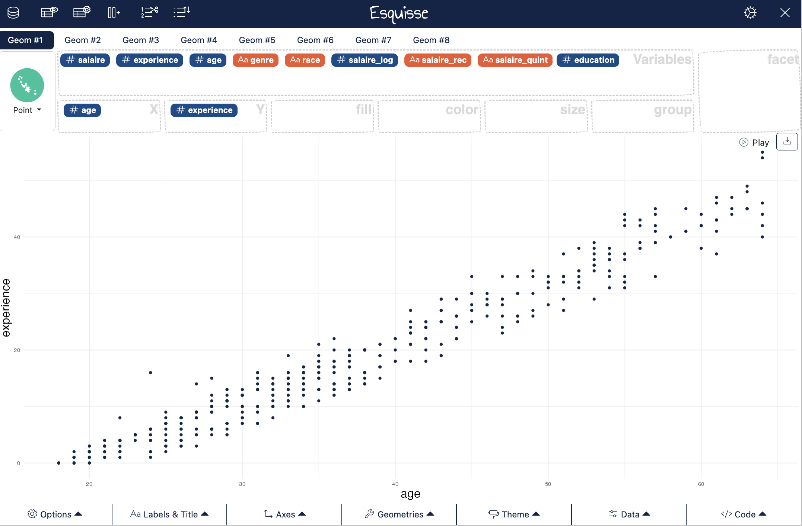
Le nuage de points entre l’âge et l’expérience suggère une relation positive (les points sont aligné sur une droite ascendante) et élevée (les points sont quasi-parfaitement alignés).
Pour avoir un indicateur de la relation entre les deux variables, on peut calculer l’indice de corrélation.
cor(Salaires$age,Salaires$experience)La corrélation est ici de 0,98, ce qui est proche de 1, ce qui suggère une forte corrélation positive entre les deux variables. Rien d’étonnant, l’expérience vient avec l’age.
Le graphique ci-dessous présente des simulations de nuages de points et les indices de corrélations associés en distinguant le lien positif ou négatif et la dispersion plus ou moins forte des données autour d’une droite indiquant une relation linéaire entre les deux variables.
Quand est-ce qu’une relation est considérée comme forte ? Il n’y a pas de règle absolue, mais on peut se dire par convention qu’une corrélation en valeur absolue supérieure à 0,5 indique une forte corrélation.
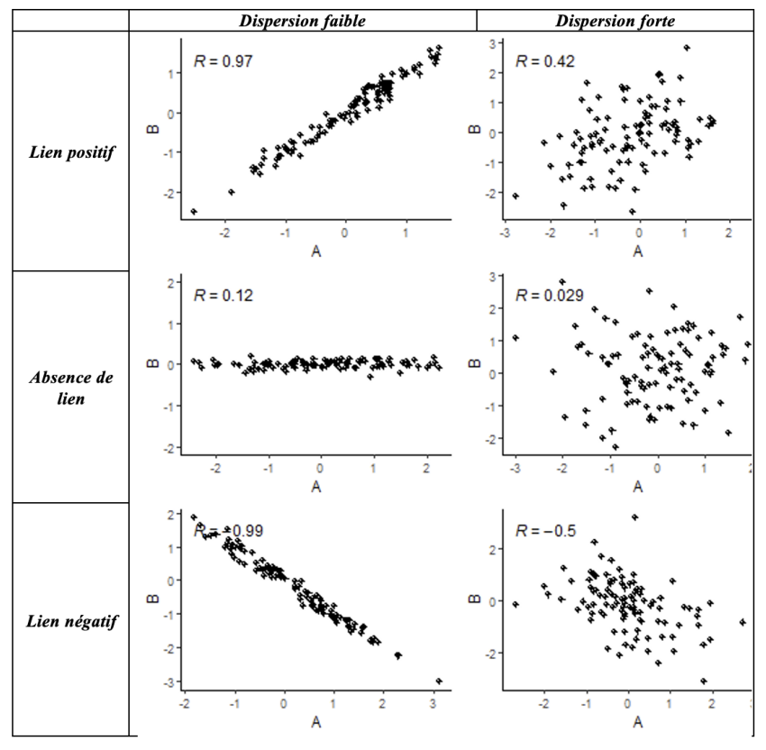
3.1.2 Corrélation de Pearson et de Spearman ?
Par défaut, la fonction cor calcule une corrélation dite “de Pearson”, utile pour décrire des relations linéaires monotones entre des variables quantitatives, et lorsque les courbes des distributions des variables ont à peu près une “forme normale”, c’est-à-dire symétrique et en cloche. L’indice de corrélation de Pearson est assez sensible aux points aberrants, les “outliers”.
Tip
Mais en fait, c’est quoi une distribution normale ?
C’est une distribution qui suit la “loi normale” dont la courbe s’appelle aussi courbe de Gauss ou courbe en cloche, elle est symétrique par rapport à sa moyenne.
Cette distribution particulière est rarement présente dans un jeu de données sauf pour certaines variables particulières (la taille, le poids dans une population).
Cette distribution a beaucoup de propriétés statistiques particulières qui la rende intéressante comme point de départ d’une description statistique.
On retrouve aussi cette loi statistique quand on cherche à faire de l’inférence statistique (établir des résultats pas seulement à l’échelle de son échantillon mais pour l’ensemble de la population dont il est représentatif).
On peut résumer quelques configurations idéal-typiques entre deux variables quantitatives avec la figure ci-dessous :
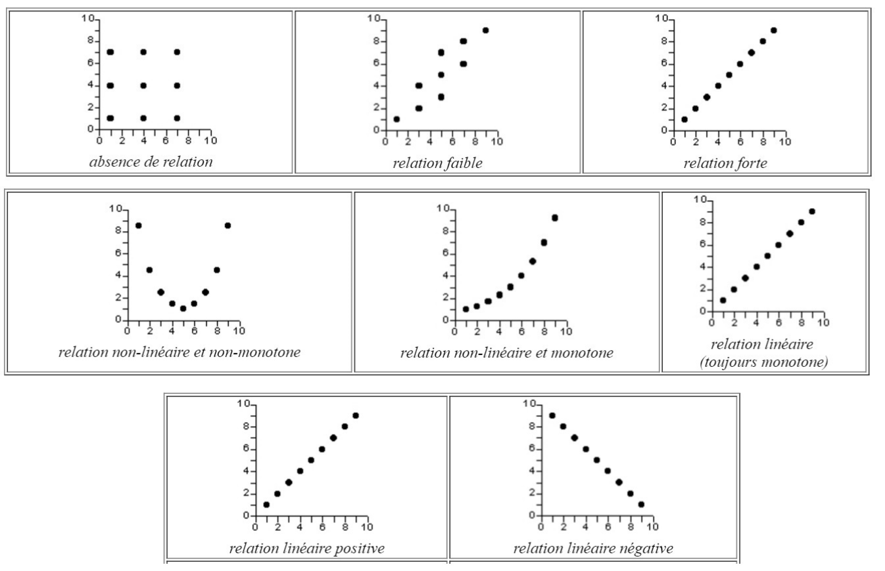
Lorsque ces conditions ne sont pas bien remplies, on peut réfléchir à calculer une corrélation dite “de Spearman”, aussi appelée “corrélation des rangs”. Le principe est que la corrélation est calculée sur les rangs des valeurs des variables plutôt que sur leur valeur elles-mêmes. Ce peut être par exemple assez utile pour travailler sur la relation entre l’âge et le salaire, dans la mesure où le salaire a une distribution très asymétrique (on pourrait aussi transformer le salaire en log pour que la distribution soit moins dissymétrique).
cor(Salaires$age, Salaires$salaire,
method = c("pearson"))
cor(Salaires$age, Salaires$salaire,
method = c("spearman"))
Tip
On travaille ici sur des données qui n’ont pas de valeur manquante (des NA), sinon il aurait fallu rajouter l’argument use=“complete.obs” dans la fonction corrélation.
3.1.3 La corrélation sur des sous-groupes
On peut aussi calculer des corrélations par groupe, par exemple étudier l’association entre l’âge et l’expérience suivant le sexe.
Salaires |>
group_by(genre) |>
summarise(
cor_pearson = cor(age, salaire, method = "pearson", use = "complete.obs"),
cor_spearman = cor(age, salaire, method = "spearman", use = "complete.obs")
)On pourra chercher à interpréter pourquoi l’âge a un effet plus fort sur le salaire chez les hommes que chez les femmes (carrières plus linéaires pour les hommes etc).
Dans esquisse, on peut utiliser l’onglet color et/ou facet pour créer deux nuages de points séparés pour les hommes et les femmes. À noter que la forme du nuage suggère que quel que soit l’âge, le salaire reste très faible et ne varie pas en fonction de l’âge (travail à temps partiel ?).
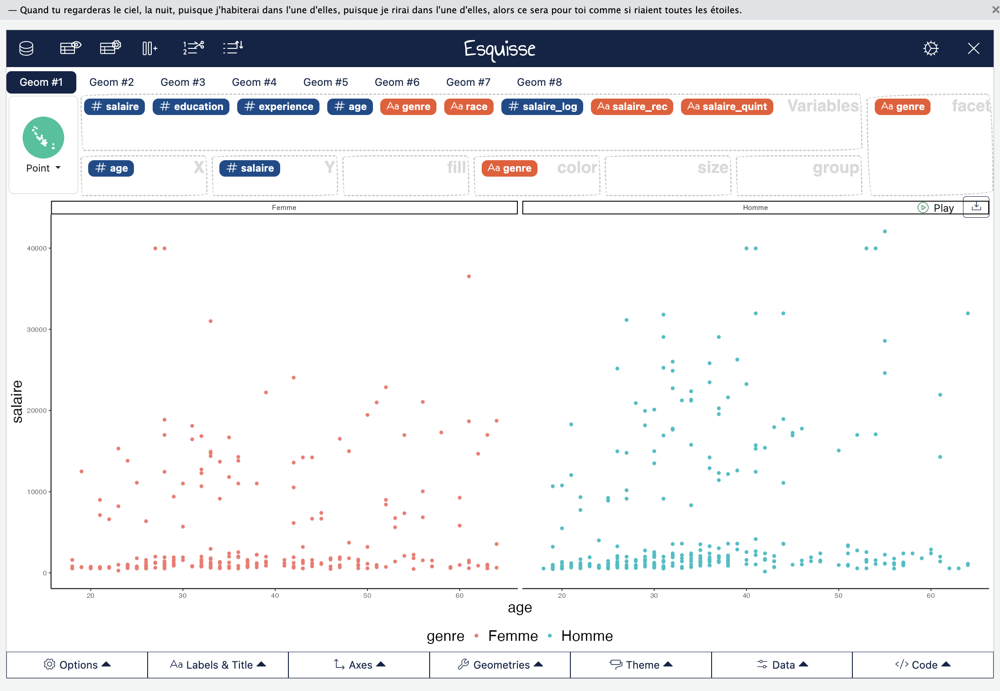
3.1.4 Matrice des corrélations et matrice des nuages de points
On peut enfin vouloir créer une matrice des corrélations, par exemple de toutes les variables quantitatives de notre jeu de données :
Salaires |>
select(where(is.numeric)) |> # Sélectionne toutes les variables numériques
cor(use = "complete.obs", method = "pearson") |> # Matrice de corrélation
round(2) # arrondit les décimales à deux Cette matrice de corrélation peut aussi être représentée avec des nuages de points grâce au package GGally que nous avons chargé dans ce chapitre :
Salaires |>
select(where(is.numeric)) |>
ggcorr(label = TRUE, label_round = 2)Ou :
Salaires |>
select(where(is.numeric)) |>
ggpairs()3.2 L’association entre une variable quali et une variable quanti et la boite à moustaches
3.2.1 Statistiques univariées par groupe
Dans le chapitre sur les statistiques univariées, nous avons abordé les cinq nombres de Tukey et les quantiles pour résumer une distribution d’une variable quantitative.
Grâce aux lignes de codes mises en place, nous avons juste besoin d’ajouter une autre fonction pour réaliser ces statistiques en fonction de différentes modalités d’une variable, à savoir, group_by :
Salaires |>
group_by(genre) |> # ou sexe
reframe(
stat = c("min", "Q1", "médiane", "Q3", "max"),
salaire = fivenum(salaire)
)Si on veut obtenir deux colonnes séparées pour les Hommes et les Femmes, il suffit d’ajouter une fonction pivot_wider, qui redéploie le tableau, en prenant comme nouveaux noms de colonnes les modalités la variable indiquée par l’argument names_from (ici genre, ou sexe) et les valeurs assignées sont celles de la colonne précédemment nommée salaire :
Salaires |>
group_by(genre) |> # ou sexe
reframe(
stat = c("min", "Q1", "médiane", "Q3", "max"),
salaire = fivenum(salaire)
) |>
pivot_wider(names_from=genre,values_from=salaire)À ce propos, nous venons de réaliser notre première transformation d’un tableau de données dans R ! Pas si compliqué, non ? Pour quelques outils de transformation si besoin, voir les cheatsheet de R…
3.2.2 Résumer par la moyenne et l’écart-type
Il est assez courant dans les articles de décrire ses variables quantitatives en indiquant la moyenne (indicateur de centralité) et l’écart-type (indicateur de dispersion, correspondant à la racine carrée de la variance).
Salaires |>
group_by(genre) |>
summarise(
mean= mean(age,na.rm=T),
sd= sd(age,na.rm=T),
)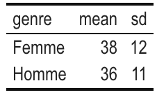
Pourquoi ces deux indicateurs sont-ils utilisés ? D’abord, on peut dire ici avec ce tableau qu’en moyenne les femmes sont un peu plus âgées que les hommes et qu’il y a aussi une plus forte variabilité de l’âge chez les femmes que chez les hommes (sd pour écart-type). Par ailleurs, si on suppose que l’âge a un distribution normale dans l’échantillon (condition rarement remplie mais passons), on peut dire que :
68 % des femmes ont un âge compris entre [38-12 ; 38 + 12]=[26 ; 50] et 68 % des hommes ont un âge compris entre [25 ; 47],
95 % des femmes ont un âge compris entre [38-2*12 ; 38 + 2*12]=[14 ; 62] et 95 % des hommes ont un âge compris entre [14; 24],
99 % des femmes ont un âge compris entre [38-3*12 ; 38 + 3*12], etc…
Bref, tout cela donnerait des intervalles tout à fait cohérents si les distributions des variables étaient normales, ce qui est rarement le cas (enfin, pas toujours en tout cas), et l’intérêt de cette approximation est de donner corps à ce que veut dire l’écart-type comme indicateur de dispersion d’une variable.
Tip
Faut-il résumer une variable par sa moyenne ou sa médiane ?
Par son écart-type ou par des quantiles ?
La première option est très courante (notamment dans les revues anglophones) mais pas forcément la plus judicieuse…
Quand on travaille sur des distributions asymétriques (donc non normales) !
Car :
la moyenne est sensible aux valeurs extrêmes d’une distribution
l’idée de dispersion des données par l’écart-type ne sera pas non plus très fiable sur une telle distribution…
3.2.3 La boîte à moustaches : un peu d’explication
Revenons à des statistiques plus amusantes avec John Tukey qui a proposé dans les années 1950 le graphique de la boîte à moustache pour résumer d’un coup d’oeil la distribution d’une variable quantitative. En anglais, on dit boxplot ou box-and-whisker plot (le deuxième est autrement plus amusant, comme le nom en français !).
L’idée est de représenter graphiquement certaines valeurs clefs de la distribution d’une variable quantitative, de manière à visualiser en un clin d’oeil la position centrale et la dispersion des données d’une distribution. Ce type de graphique a surtout de l’intérêt quand on compare des distributions d’une même variable quantitative entre plusieurs modalités d’une variable qualitative (le sexe, les catégories raciales, etc).
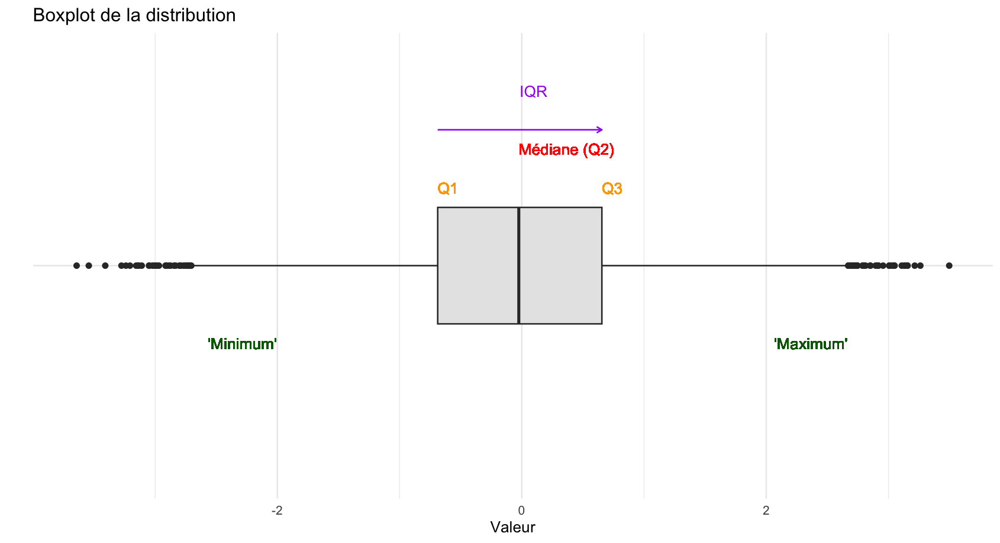
Détail sur la boîte à moustaches
Il y a plusieurs variantes de la boîte à moustaches, mais le principe c’est qu’il y a toujours une boite et des moustaches sur les côtés. Les valeurs des extrêmités de la boîte et des moustaches, dans la version originale et celle obtenue dans R par défaut sont les valeurs suivantes :
- L’extrêmité gauche de la boîte (en rouge ici) correspond au Q1, c’est-à-dire au premier quartile (autrement dit, 25 % des individus sont situés en-dessous de cette valeur).
quantile(Salaires$salaire,probs=0.25)- L’extrêmité droite de la boîte correspond au Q3, le troisième quartile (autrement dit, 25 % des individus sont situés au-dessus de cette valeur).
quantile(Salaires$salaire,probs=0.75)- L’écart entre les deux limites de la boîte correspond à l’étendue inter-quartile (interquartile range), autrement dit 50 % des individus de la distribution prennent une valeur comprise au sein de cette boîte.
quantile(Salaires$salaire,probs=0.75)-quantile(Salaires$salaire,probs=0.25)
#ou :
IQR(Salaires$salaire)La barre au milieu de la distribution correspond à la médiane de la distribution.
L’extrêmité basse ou à gauche de la moustache correspond au premier quartile moins 1,5 fois l’écart inter-quartile (‘minimum’=Q1-1.5*IQR).
quantile(Salaires$salaire,probs=0.25)-1.5*IQR(Salaires$salaire)- L’extrêmité haute ou à droite de la moustache correspond au troisième quartile plus 1,5 fois l’écart inter-quartile (‘maximum’=Q3+1.5*IQR).
quantile(Salaires$salaire,probs=0.75)+1.5*IQR(Salaires$salaire)Si on comprend relativement facilement l’intérêt des extrêmités de la boîte comme indicateurs de distribution, pourquoi diable cette définition des extrêmités des moustaches ? Pour le comprendre, il faut encore revenir à la densité de distribution d’une loi normale :
Par définition, il y a 50% des observations de la distribution entre le Q1 et le Q3
Dans le cas d’une distribution normale (symétrique par rapport à la moyenne, qui est alors aussi égale à la médiane et au mode), environ 25% des observations sont comprises entre l’extrêmité de la moustache inférieure et le le Q1, de même à droite du Q3 jusqu’à la limite de la moustache supérieure.
Ce qui est en dehors des extrêmités, ce sont alors des points aberrants (qui représentent dans le cas d’une loi normale exactement 0,7% des observations, ce qu’on pourrait montrer mathématiquement, mais on l’a ici simulé sur une distribution normale avec 10 000 observations et on obtient 0,6% en additionnant à gauche et à droite, bon c’est presque ça !).
En somme, les moustaches nous indiquent l’étendue des valeurs non aberrantes de la distribution.
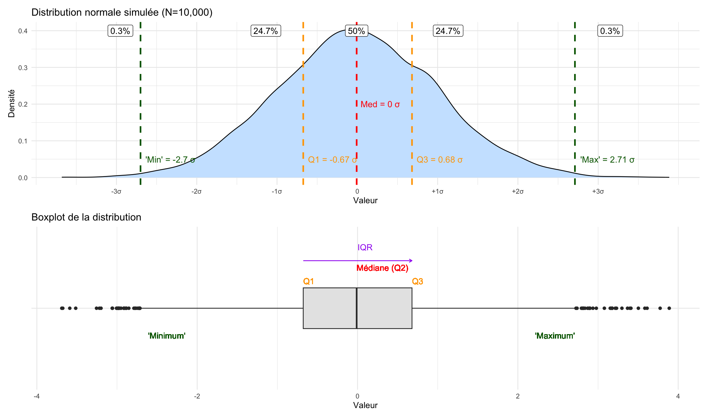
À noter : si la distribution statistique décrite n’est pas normale, alors il n’est pas dit que les outliers représentent seulement 0,7%, comme on le voit aisément avec cette simulation d’une distribution assez asymétrique, où les outliers représentent 5,5% des observations.
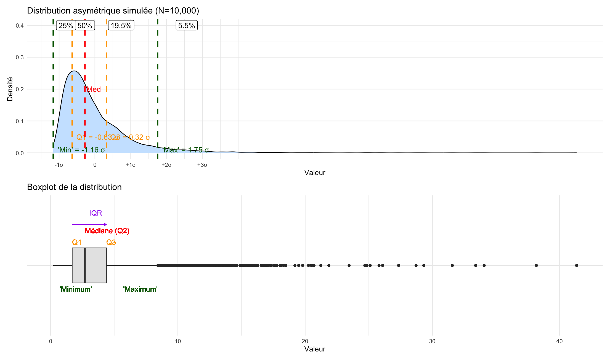
Cela reste faible et montre bien l’intérêt de la boîte à moustaches : elle nous montre l’étendue de quasi toutes les observations. Le décalage observé sur ce second graphique de la boîte et de la médiane (qui n’est plus centré) nous montre bien que la courbe est asymétrique.
3.2.4 La boîte à moustaches : un peu de pratique
Pour réaliser des boîtes à moustaches, rien de plus simple, nous pouvons de nouveau avoir recours à esquisse :
esquisser(Salaires)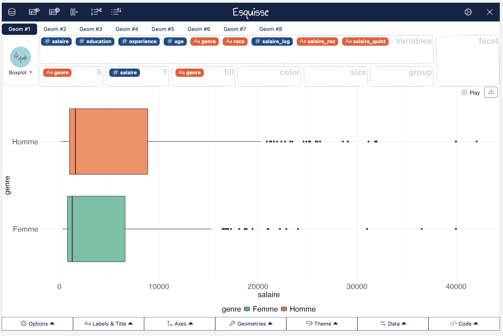
On voit bien qu’aussi bien chez les hommes que les femmes, la distribution du salaire est très asymétrique… Beaucoup de monde qui gagne peu et une minorité qui gagne pas mal, les outliers sont tous à des niveaux stratosphériques par rapport au reste de la distribution…
Mais on voit aussi que la médiane du salaire des hommes et plus élevée que celle des femmes et que l’étendue des valeurs de salaire est plus forte chez les hommes que chez les femmes.
L’asymétrie de la distribution justifie souvent sa transformation logarithmique ce qui la rend plus “symétrique” (on fait log(Salaires$salaire), ce qu’on peut faire directement dans Esquisse en choisissant log dans Y-axis transform, et fait alors surtout apparaitre que les femmes gagnent moins que les hommes.
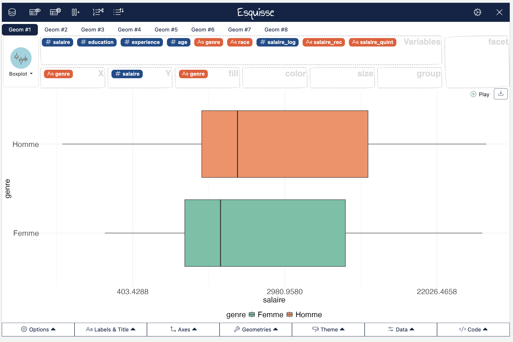
3.3 L’association entre deux variables qualis et le tableau croisé
3.3.1 Sur quelques conventions du tableau croisé
Nous en arrivons au tableau croisé pour étudier les associations entre deux variables qualitatives.
D’abord, rappelons quelques conventions. On s’emmêle facilement les pinceaux quand on fait des tableaux croisés, et on peut garder à l’esprit quelques petites choses en tête :
Quelle est ma variable-réponse ou ma variable dépendente, c’est à dire la variable dont on suppose qu’elle dépend d’un autre facteur ?
Quelle est ma variable indépendante, c’est à dire la variable dont on suppose qu’elle a un effet sur la variable dépendante ?
On peut par exemple ici supposer que le niveau de salaire (codé de manière catégorielle) dépend du sexe, mais aussi de la catégorie raciale, du niveau d’éducation, etc. On pourrait aussi supposer que le niveau de diplôme dépend de la catégorie raciale, etc.
Pour visualiser si un facteur affecte une variable dépendante, on peut réaliser un tableau croisé dans lequel :
On mettra la variable dépendante “en colonnes”
On met la variable indépendante “en lignes”
On calcule des pourcentages en ligne (on a besoin de normaliser les effectifs des lignes pour les comparer entre elles !)
On comparera alors les lignes d’une même colonne entre elles.
Bien sur, ça c’est de la théorie. Il y a plein de cas où en fait on est davantage intéressé par les pourcentages en colonnes, voire les pourcentages totaux, on veut inverser les lignes et les colonnes… Toutefois, avoir ces petites conventions en tête permet de s’y retrouver quand on est un peu perdu dans ses traitements statistiques.
3.3.2 Mise en pratique du tableau
Nous retrouvons les fonctions du package questionr. D’abord nous avons vu précédemment comment catégoriser le salaire en quintiles, ce que nous pouvons reproduire, je ne mets ci-dessous que les lignes de code correspondantes :
icut()
Salaires$salaire_rec <- cut(Salaires$salaire,
include.lowest = TRUE,
right = TRUE,
dig.lab = 4,
breaks = c(160, 800, 1200, 1920, 11008, 42064)
)
irec()
## Recoding Salaires$salaire_rec into Salaires$salaire_quint
Salaires$salaire_quint <- Salaires$salaire_rec |>
fct_recode(
"Très faible" = "[160,800]",
"Faible" = "(800,1200]",
"Moyen" = "(1200,1920]",
"Élevé" = "(1920,1.101e+04]",
"Très élevé" = "(1.101e+04,4.206e+04]"
)Pour créer un tableau croisé des effectifs, on pourra écrire :
Salaires |> freqtable(race,salaire_quint)La variable en ligne (ici, race) est la variable indépendante, c’est la première à être écrire, tandis que la variable en colonne (ici, salaire_quint) est la variable dépendante.
Pour obtenir des pourcentages en ligne, il suffit d’écrire :
Salaires |> freqtable(race,salaire_quint) |> rprop()Dans ce tableau, on peut aussi ajouter les effectifs totaux des lignes et par exemple ne pas mettre de décimales après la virgule :
Salaires |> freqtable(race,salaire_quint) |> rprop(n=T,digit=0)Bien sur, il est possible de réaliser un tableau des pourcentages en colonne :
Salaires |> freqtable(race,salaire_quint) |> cprop(n=T,digit=0)Ou des pourcentages totaux (qu’on appelle aussi pourcentages conjoints) :
Salaires |> freqtable(race,salaire_quint) |> prop(n=T,digit=0)3.3.3 Le tableau et son graphique
On peut aussi réaliser un diagramme à barres empilées ou adjacentes de l’association entre la catégorie raciale et le niveau de salaire :
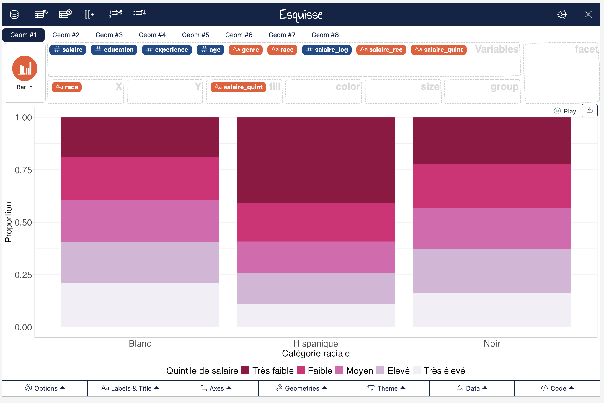
On pourrait améliorer ce graphique de deux manières :
En inversant l’ordre des étiquettes empilées (Très élevé en haut, très faible en bas)
En mettant l’axe des Y en pourcentages (attention, il faut avoir installer le package scales)
ggplot(Salaires) +
aes(x = race, fill = fct_rev(salaire_quint)) + # Inverser l'ordre d'empilement
geom_bar(position = "fill") +
scale_y_continuous(labels = scales::percent_format()) + # Axe des Y en % avec package scales
scale_fill_brewer(palette = "PuRd", direction = -1,
guide = guide_legend(reverse = TRUE)) + # Légende dans le bon ordre
labs(
x = "Catégorie raciale",
y = "Pourcentage",
fill = "Quintile de salaire"
) +
theme_light() +
theme(
legend.position = "bottom",
axis.title.y = element_text(size = 18L),
axis.title.x = element_text(size = 18L),
axis.text.y = element_text(size = 18L),
axis.text.x = element_text(size = 18L),
legend.text = element_text(size = 18L),
legend.title = element_text(size = 18L)
)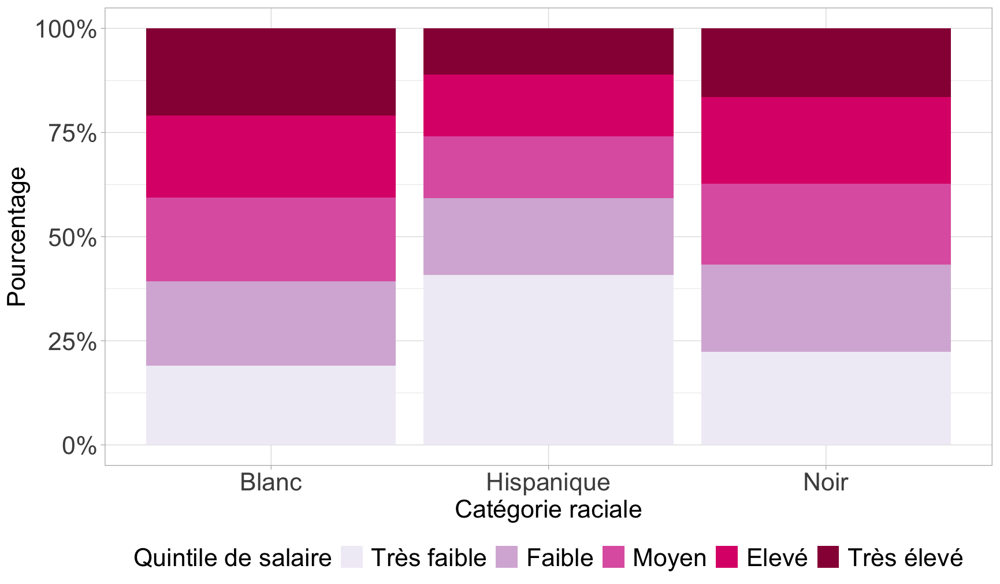
Bonus 1
On peut vouloir plutôt réaliser un diagramme à barres adjacentes plutôt que empilées. Dans ce cas, il est plus simple de repartir du tableau des pourcentages en ligne :
#On crée le tableau croisé avec % en ligne
tab <- Salaires |>
freqtable(race, salaire_quint) |>
rprop(total=F) #On enlève les % totaux
# Il faut transformer ce tableau en format tidy pour le graphique
df_tab <- as.data.frame.matrix(tab) |> #transformation en une matrice de format data.frame
rownames_to_column("race") |> #Les lignes étaient des "row.names" auxquelles on assigne un nom de colonne
pivot_longer(
cols = -race,
names_to = "salaire_quint",
values_to = "pct"
) #On transforme le tableau de telle sorte que tous les % soient dans la même colonne et les modalités de salaire également.
df_tab$salaire_quint <- df_tab$salaire_quint |>
fct_relevel(
"Très faible","Faible","Moyen","Elevé","Très élevé"
)
ggplot(df_tab, aes(x = salaire_quint, y = pct / 100, fill = race)) +
geom_bar(stat = "identity",position = position_dodge2(width = 0.9,preserve="single"))+
geom_text(aes(label = paste0(round(pct,0), "%")),
position = position_dodge2(width = 0.9,preserve="single"),
vjust=-.3,
size = 5) +
scale_y_continuous(lim=c(0,.45),labels = scales::percent_format(accuracy = 1)) +
scale_fill_brewer(palette = "Dark2", direction = -1,
guide = guide_legend(reverse = T)) +
labs(
x = "Quintile de salaire",
y = "Pourcentage",
fill = "Catégorie raciale"
) +
theme_light() +
theme(
legend.position = "bottom",
axis.title.y = element_text(size = 18L),
axis.title.x = element_text(size = 18L),
axis.text.y = element_text(size = 18L),
axis.text.x = element_text(size = 18L),
legend.text = element_text(size = 18L),
legend.title = element_text(size = 18L)
)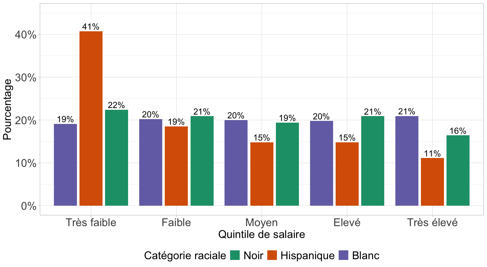
Bonus 2
On pourrait aussi vouloir créer un diagramme à barres avec les étiquettes de valeurs de pourcentage sur le graphique. Dans ce cas, il est plus simple de repartir du tableau des pourcentages en ligne :
#On crée le tableau croisé avec % en ligne
tab <- Salaires |>
freqtable(race, salaire_quint) |>
rprop()
# Il faut transformer ce tableau en format tidy pour le graphique
df_tab <- as.data.frame.matrix(tab) |> #transformation en une matrice de format data.frame
rownames_to_column("race") |> #Les lignes étaient des "row.names" auxquelles on assigne un nom de colonne
select(-Total) |> #On enlève les lignes de total
pivot_longer(
cols = -race,
names_to = "salaire_quint",
values_to = "pct"
) #On transforme le tableau de telle sorte que tous les % soient dans la même colonne et les modalités de salaire également.
df_tab$salaire_quint <- df_tab$salaire_quint |>
fct_relevel(
"Très faible","Faible","Moyen","Elevé","Très élevé"
)
# Graphique
ggplot(df_tab, aes(x = race, y = pct / 100, fill = fct_rev(salaire_quint))) +
geom_bar(stat = "identity") +
geom_label(aes(label = paste0(round(pct,0), "%")),
position = position_stack(vjust = 0.5),
size = 5) +
scale_y_continuous(labels = scales::percent_format(accuracy = 1)) +
scale_fill_brewer(palette = "PuRd", direction = -1,
guide = guide_legend(reverse = T)) +
labs(
x = "Catégorie raciale",
y = "Pourcentage",
fill = "Quintile de salaire"
) +
theme_light() +
theme(
legend.position = "bottom",
axis.title.y = element_text(size = 18L),
axis.title.x = element_text(size = 18L),
axis.text.y = element_text(size = 18L),
axis.text.x = element_text(size = 18L),
legend.text = element_text(size = 18L),
legend.title = element_text(size = 18L)
)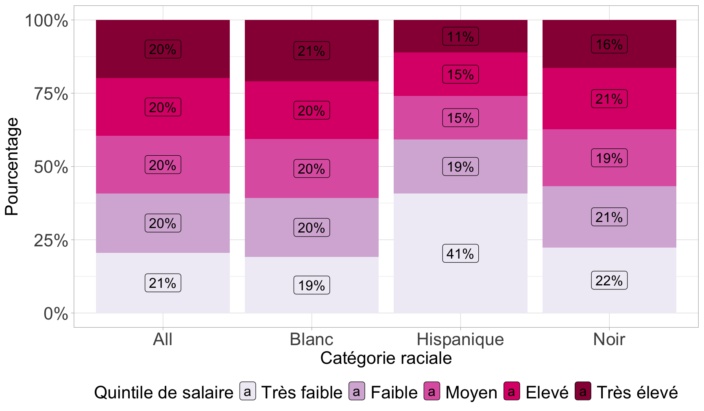
3.3.4 La force de l’association
Pour étudier l’intensité de l’association entre deux variables qualitatives, l’indice le plus évident est le V de Cramer qui prend une valeur entre 0 (pas d’association) et 1 (association parfaite).
À partir de 0,2 ou 0,3, on pourra considérer qu’il y a une association notable.
On le calcule ainsi :
tab <- Salaires |>
freqtable(race, salaire_quint)
cramer.v(tab)3.3.5 Un mot sur le test du khi-deux
Difficile de ne pas évoquer pour finir le test du chi-deux, sans toutefois trop s’y attarder. Précisons que Julien Barnier a écrit un récapitalutif très exhaustif sur ce qu’est et n’est pas le test du khi-deux (ou chi-deux ou -deux ou chi-squared…).
À quoi sert le test du khi-deux :
Déterminer la probabilité que les lignes et les colonnes du tableau croisé sont indépendantes
Évaluer si la répartition des effectifs dans une table de contingence est significativement différente de la table calculée sous l’hypothèse d’indépendance des deux variables croisées
La distribution du salaire est-elle indépendante de celle de la catégorie raciale des individus ? Y-a-t-il une association entre race et salaire ?
Explications sur le test du khi-deux
On va poser un test statistique, avec une hypothèse H0, ou hypothèse nulle qui est que :
La distribution des quintiles de salaire est indépendante de la catégorie raciale.
On cherche à savoir à quoi ressemblerait notre tableau croisé si les deux variables étaient effectivement indépendantes l’une de l’autre et quelle est la probabilité (la p-valeur) pour que les deux variables soient effectivement indépendantes l’une de l’autre, modulo nos fluctuations d’échantillonnage.
En pratique, les variables sont indépendantes si :
Les pourcentages lignes du tableau croisé sont les mêmes pour toutes les lignes
Les pourcentages colonnes du tableau croisé sont les mêmes pour toutes les colonnes
Dans notre exemple, lignes et colonnes ne semblent pas très indépendantes.
Mais dans un échantillon issu d’une enquête, il est rare que les variables croisées soient parfaitement indépendantes car les données du tableau sont dépendantes de l’échantillon interrogé et tout échantillon est soumis à des biais (qui, si l’échantillon a été construit de manière aléatoire, sont dus au hasard, donc des fluctuations d’échantillonage).
Le test du khi-deux permet de savoir à partir de quel seuil on peut estimer que les variations observées par rapport à la situation d’indépendante sont dues au hasard et à partir de quand elles sont dues à un lien entre les variables.
À partir du tableau des effectifs, on peut calculer les effectifs théoriques, si les deux variables étaient indépendantes, grâce aux marges des lignes et des colonnes :
Effectif théorique d’une cellule = (total ligne x total colonne) / total global
Ce qu’on peut calculer manuellement à partir des marges (les totaux) qu’on peut obtenir par exemple en faisant ainsi :
Salaires |>
freqtable(race, salaire_quint) |>
prop(n=T)L’effectif théorique de la cellule Blanc x Très faible est donc 90,6 car :
110*440/534Heureusement R dispose de la fonction chisq.test() qui permet notamment d’afficher les effectifs théoriques :
tab<-Salaires |>
freqtable(race, salaire_quint)
chi<-chisq.test(tab)
chi$expectedPour mémoire les effectifs observés sont :
chi$observedAlors à quel point les effectifs théoriques divergent des effectifs observés ?
Pour ce faire, on calcule des “khi-deux partiels” définis comme la distance standardisée entre les effectifs théoriques et observés :
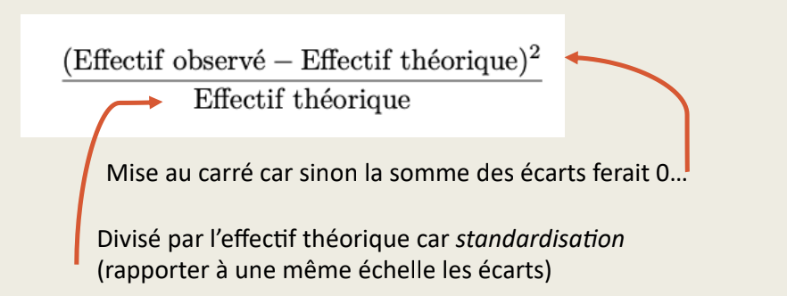
Ces khi-deux partiels peuvent être calculés comme ceci :
(chi$expected-chi$observed)^2/chi$expected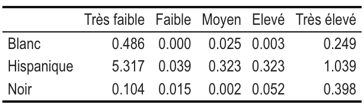
Ici, on voit déjà que les écarts à l’indépendance sont les plus élevés pour la cellule HispaniquexTrès faible, ce que nous avions repéré avec une surreprésentation de cette catégorie raciale parmi ceux qui gagnent de faibles salaires.
On calcule ensuite la valeur du khi-deux du tableau, qui correspond à la somme des khi-deux partiels :
sum((chi$expected-chi$observed)^2/chi$expected)Qu’on obtient aussi ici :
chi$statisticEst-ce que cette valeur est faible ou élevée ?
On va pouvoir comparer cette statistique à la “loi du khi-deux”, une distribution statistique qui nous donne les valeurs théoriques du khi-deux d’un tableau sous condition d’indépendance.
Cette loi dépend d’un paramètre : le nombre de degrés de libertés. Quel est le nombre de degrés de libertés ici ?
Il dépend grosso modo de la taille du tableau :
(Nombre de lignes - 1) x (Nombre de colonnes - 1)
Ici, nous avons 3 lignes et 5 colonnes, donc le degré de liberté (ddl) est égal à 8.
On le vérifie ici :
chi$parameter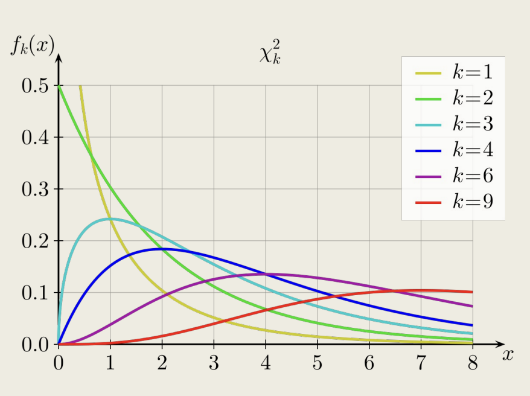
On va enfin calculer une probabilité (une p-valeur), qui correspond à l’aire sous la courbe théorique à droite de la valeur du khi-deux observée, qui ici vaut 0,397, comme indiqué sur la figure.
En effet, rappelons-nous, la p-valeur c’est la probabilité que le khi-2 théorique soit supérieur ou égal au khi-2 observé sous condition d’indépendance.
Ici, on voit que si les deux variables sont indépendantes, il y a une probabilité de presque 40 % pour que par hasard on obtienne une valeur du khi-2 au moins aussi élevée que celle qu’on a observé (8,374).
Autrement dit, notre valeur du khi-deux est assez plausible / compatible avec le fait que les deux variables soient indépendantes !
Cette p-valeur nous empêche de rejeter l’hypothèse d’indépendance entre catégorie racial et salaire.
En sciences sociales, on retient généralement le seuil d’une p-valeur de 0,05 en dessous de laquelle on estime qu’on peut rejeter l’hypothèse d’indépendance.
Pour ce faire, il aurait fallu ici obtenir un khi-2 observé au moins égal à 15,507 (on en est loin !).
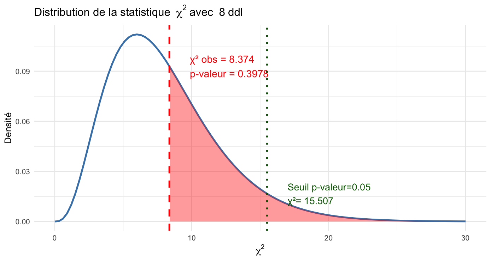
Alors que conclure ? On ne rejette pas H0, l’hypothèse d’indépendance.
Mais pouvons-nous affirmer que le salaire ne dépend pas de la catégorie raciale ? Eh bien, pas vraiment non plus. En gros, on n’a pas rejeté l’idée que les deux variables sont indépendantes, et les variations observées peuvent être dues à des fluctuations d’échantillonnage… ou pas.
Et si la p-valeur avait été inférieure à 0,05 ? On aurait pu rejeter H0 l’hypothèse d’indépendance et on aurait considéré qu’un lien existe entre les deux variables.
On peut vérifier la p-valeur calculée comme ceci :
chi$p.valueOn pose l’hypothèse nulle (H0) que les deux variables sont indépendantes. On fixe un seuil de significativité pour la p-valeur égal à 0,05, en dessous de laquelle on rejette l’hypothèse d’indépendance et à ce moment là on considère qu’un lien existe entre les variables :
tab<-Salaires |>
freqtable(race, salaire_quint)
chi<-chisq.test(tab)
chiLa p-valeur est supérieure à 0,05, donc on ne peut pas rejeter H0 et on ne peut pas conclure qu’un lien existe entre les deux variables.
Exercice
Tester l’hypothèse d’un lien entre le sexe et les quintiles de salaire.